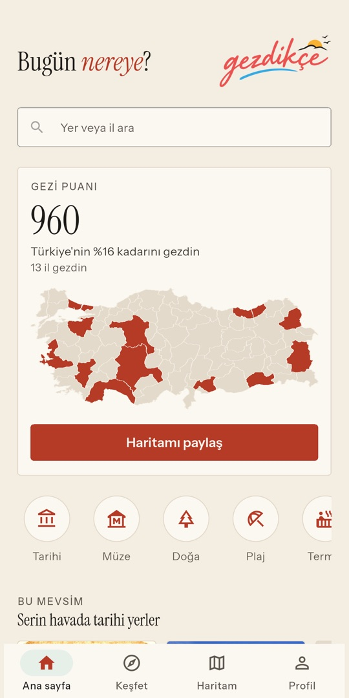
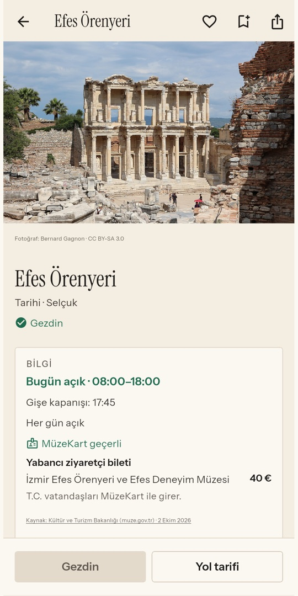
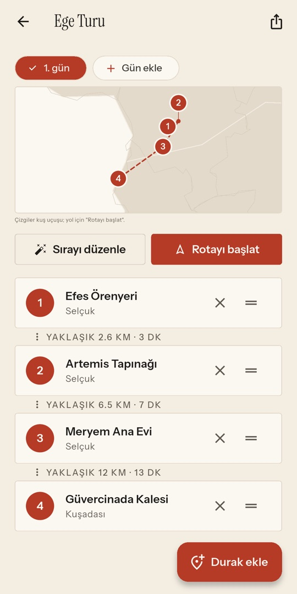
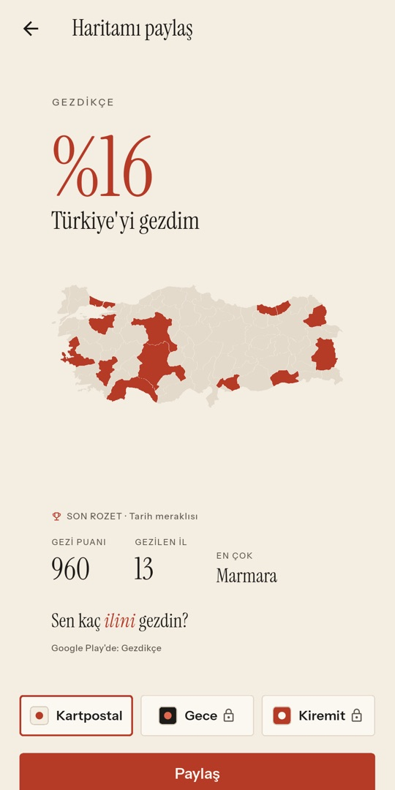

Türkiye gezi haritası
Gezdikçe haritan renklensin.
Türkiye'nin 81 ilinde gezdiğin yerleri haritanda işaretle, 4.500'den fazla tarihi yer, müze, doğa ve plajı keşfet, gezini gün gün planla.
Çok yakında Google Play'de
Ücretsiz · üye olmadan başlar · Türkçe ve İngilizce

Gezi Puanın ve haritan
Saatler, ücret, MüzeKart
Gün gün gezi planı
Instagram hikâyesi kartı
Neler yapabilirsin?
Haritanı boya
Gezdiğin il ve ilçeleri tek dokunuşla işaretle; Türkiye'nin yüzde kaçını gezdiğini ve bölgelerdeki ilerlemeni gör.
4.500'den fazla yer
Tarihi yerler, müzeler, doğa, plaj, termal ve kültür-sanat. Her ilde "Mutlaka gör" listesi ve "Ne yenir".
Gezini planla
Durakları günlere böl, sırala; aradaki yaklaşık yol ve süreyi gör, günün rotasını tek dokunuşla Google Haritalar'da başlat.
Puan topla, paylaş
Gezdiğin her yer puan kazandırır, 24 rozet seni bekler. Haritanı ve puanını hikâye boyutunda bir kartla paylaş.
Bilgiler nereden geliyor?
Müze ve ören yerlerinin saatleri, ücretleri ve MüzeKart bilgisi Kültür ve Turizm Bakanlığı'nın sitesinden alınır, son güncelleme tarihiyle gösterilir. Yer bilgileri OpenStreetMap, Wikidata ve Vikipedi'den; fotoğraflar Wikimedia Commons'tan, her birinin yazarı ve lisansıyla. Yöresel ürünler TÜRKPATENT coğrafi işaret sicilinden.
Üye olmadan kullanabilirsin; haritanı kaybetmemek istersen Google hesabınla kaydedersin. Konumun yalnızca "Şu an buradayım" dediğinde bir kez kullanılır, saklanmaz. Premium; reklamsız kullanım, sınırsız gezi planı ve bütün kart temalarını açar.
In English
Gezdikçe is a travel map of Türkiye. Mark the places you've visited across all 81 provinces, discover more than 4,500 historic sites, museums, nature spots and beaches, and plan your trips day by day. Museum hours and fees come from the Ministry of Culture and Tourism, with the date they were last updated.
Free to use, no sign-up needed. The app is available in English and Turkish.